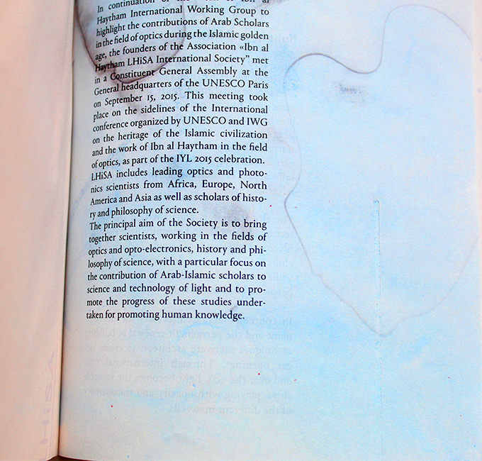
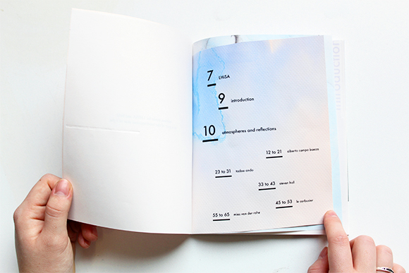
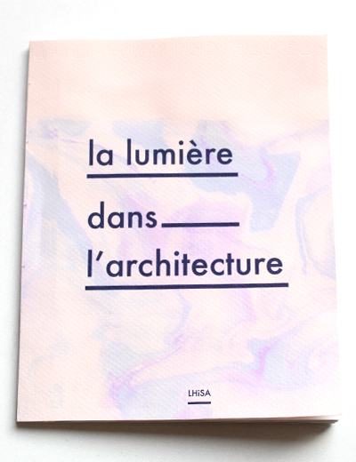
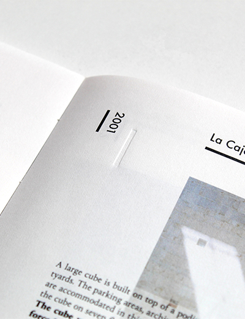
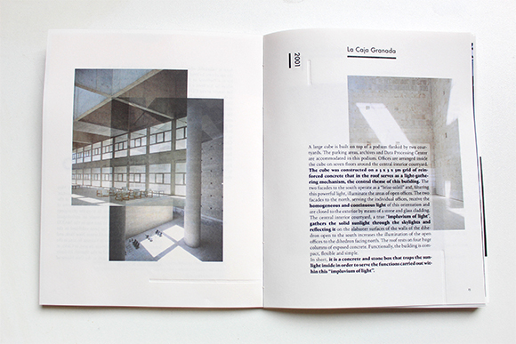
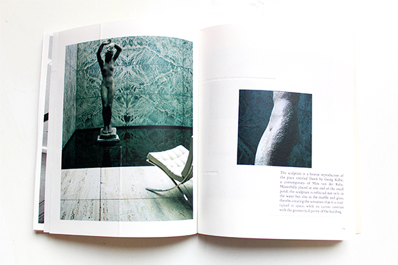
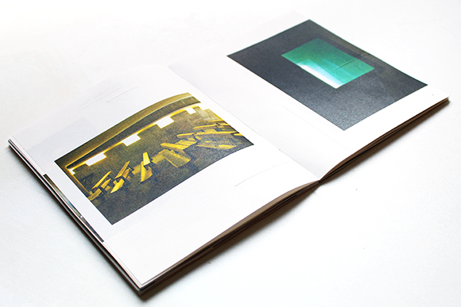
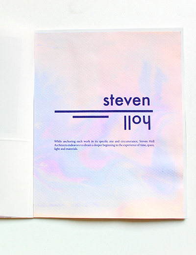
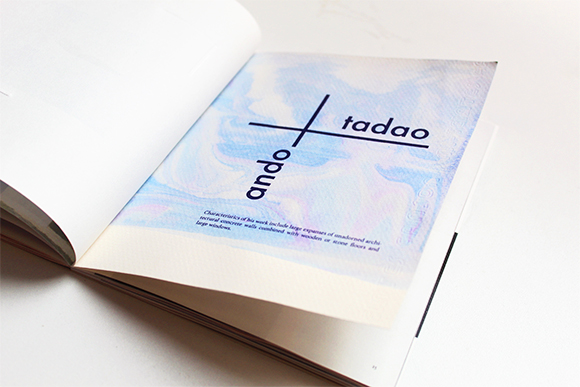

La lumière dans l'architecture
Format 148 x 185 / ouvert—296 x 185
Imprimé sur papier 80g—reliure dos carré collé
Toulouse—Février 2017
La lumière est un invariant de l’architecture, elle définie et signale un lieu, que ce soit par le déplacement du soleil ou par
un éclairage artificiel intérieur ou extérieur. Depuis des siècles, la lumière a reçu multiples interprétations: d’un symbole
de vérité, à un symbole d’esprit et de divinité, elle a également été associée aux concepts de conscience et de vie. Il semble
que la lumière ai été le sujet d’interprétations symboliques depuis de l’Homme a commencé à croire en l’au-delà.
Ainsi, il apparait cohérent que l’architecte cherche à travailler et à magnifier la lumière à travers ses constructions.
Dans l’architecture contemporaine, le développement et le renouvellement permanent des techniques architecturales motive
les architectes à créer des ouvertures toujours plus larges. Cette édition est réalisée pour LHiSA dans le cadre de l’année
internationale de la lumière. À première vue, les procédés plastiques sont à l’opposé de la rigueur de l’architecture, pourtant
des analogies sont possibles grâce au thème de la lumière.
L’édition propose un écho entre un univers fluide avec un contenu très construit. Au fil des pages les textes et les visuels sont toujours
mis en page de manière à ce qu’ils fassent écho au type d’architecture mentionné. Sur chaque page, de manière plus ou moins subtile
des éléments en gaufrage viennent rythmer les contenus et matérialiser une diffusion discrète. C’est aussi le fil conducteur du début
à la fin et le seul élément qui effectue la traversée de l’objet éditorial.
un éclairage artificiel intérieur ou extérieur. Depuis des siècles, la lumière a reçu multiples interprétations: d’un symbole
de vérité, à un symbole d’esprit et de divinité, elle a également été associée aux concepts de conscience et de vie. Il semble
que la lumière ai été le sujet d’interprétations symboliques depuis de l’Homme a commencé à croire en l’au-delà.
Ainsi, il apparait cohérent que l’architecte cherche à travailler et à magnifier la lumière à travers ses constructions.
Dans l’architecture contemporaine, le développement et le renouvellement permanent des techniques architecturales motive
les architectes à créer des ouvertures toujours plus larges. Cette édition est réalisée pour LHiSA dans le cadre de l’année
internationale de la lumière. À première vue, les procédés plastiques sont à l’opposé de la rigueur de l’architecture, pourtant
des analogies sont possibles grâce au thème de la lumière.
L’édition propose un écho entre un univers fluide avec un contenu très construit. Au fil des pages les textes et les visuels sont toujours
mis en page de manière à ce qu’ils fassent écho au type d’architecture mentionné. Sur chaque page, de manière plus ou moins subtile
des éléments en gaufrage viennent rythmer les contenus et matérialiser une diffusion discrète. C’est aussi le fil conducteur du début
à la fin et le seul élément qui effectue la traversée de l’objet éditorial.









